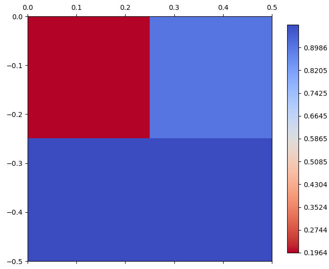

I/O Operations#
Array reading/writing, file serialization, tiling, and overview operations.
pyramids.dataset.ops.io.IO
#
Source code in src/pyramids/dataset/ops/io.py
34 35 36 37 38 39 40 41 42 43 44 45 46 47 48 49 50 51 52 53 54 55 56 57 58 59 60 61 62 63 64 65 66 67 68 69 70 71 72 73 74 75 76 77 78 79 80 81 82 83 84 85 86 87 88 89 90 91 92 93 94 95 96 97 98 99 100 101 102 103 104 105 106 107 108 109 110 111 112 113 114 115 116 117 118 119 120 121 122 123 124 125 126 127 128 129 130 131 132 133 134 135 136 137 138 139 140 141 142 143 144 145 146 147 148 149 150 151 152 153 154 155 156 157 158 159 160 161 162 163 164 165 166 167 168 169 170 171 172 173 174 175 176 177 178 179 180 181 182 183 184 185 186 187 188 189 190 191 192 193 194 195 196 197 198 199 200 201 202 203 204 205 206 207 208 209 210 211 212 213 214 215 216 217 218 219 220 221 222 223 224 225 226 227 228 229 230 231 232 233 234 235 236 237 238 239 240 241 242 243 244 245 246 247 248 249 250 251 252 253 254 255 256 257 258 259 260 261 262 263 264 265 266 267 268 269 270 271 272 273 274 275 276 277 278 279 280 281 282 283 284 285 286 287 288 289 290 291 292 293 294 295 296 297 298 299 300 301 302 303 304 305 306 307 308 309 310 311 312 313 314 315 316 317 318 319 320 321 322 323 324 325 326 327 328 329 330 331 332 333 334 335 336 337 338 339 340 341 342 343 344 345 346 347 348 349 350 351 352 353 354 355 356 357 358 359 360 361 362 363 364 365 366 367 368 369 370 371 372 373 374 375 376 377 378 379 380 381 382 383 384 385 386 387 388 389 390 391 392 393 394 395 396 397 398 399 400 401 402 403 404 405 406 407 408 409 410 411 412 413 414 415 416 417 418 419 420 421 422 423 424 425 426 427 428 429 430 431 432 433 434 435 436 437 438 439 440 441 442 443 444 445 446 447 448 449 450 451 452 453 454 455 456 457 458 459 460 461 462 463 464 465 466 467 468 469 470 471 472 473 474 475 476 477 478 479 480 481 482 483 484 485 486 487 488 489 490 491 492 493 494 495 496 497 498 499 500 501 502 503 504 505 506 507 508 509 510 511 512 513 514 515 516 517 518 519 520 521 522 523 524 525 526 527 528 529 530 531 532 533 534 535 536 537 538 539 540 541 542 543 544 545 546 547 548 549 550 551 552 553 554 555 556 557 558 559 560 561 562 563 564 565 566 567 568 569 570 571 572 573 574 575 576 577 578 579 580 581 582 583 584 585 586 587 588 589 590 591 592 593 594 595 596 597 598 599 600 601 602 603 604 605 606 607 608 609 610 611 612 613 614 615 616 617 618 619 620 621 622 623 624 625 626 627 628 629 630 631 632 633 634 635 636 637 638 639 640 641 642 643 644 645 646 647 648 649 650 651 652 653 654 655 656 657 658 659 660 661 662 663 664 665 666 667 668 669 670 671 672 673 674 675 676 677 678 679 680 681 682 683 684 685 686 687 688 689 690 691 692 693 694 695 696 697 698 699 700 701 702 703 704 705 706 707 708 709 710 711 712 713 714 715 716 717 718 719 720 721 722 723 724 725 726 727 728 729 730 731 732 733 734 735 736 737 738 739 740 741 742 743 744 745 746 747 748 749 750 751 752 753 754 755 756 757 758 759 760 761 762 763 764 765 766 767 768 769 770 771 772 773 774 775 776 777 778 779 780 781 782 783 784 785 786 787 788 789 790 791 792 793 794 795 796 797 798 799 800 801 802 803 804 805 806 807 808 809 810 811 812 813 814 815 816 817 818 819 820 821 822 823 824 825 826 827 828 829 830 831 832 833 834 835 836 837 838 839 840 841 842 843 844 845 846 847 848 849 850 851 852 853 854 855 856 857 858 859 860 861 862 863 864 865 866 867 868 869 870 871 872 873 874 875 876 877 878 879 880 881 882 883 884 885 886 887 888 889 890 891 892 893 894 895 896 897 898 899 900 901 902 903 904 905 906 907 908 909 910 911 912 913 914 915 916 917 918 919 920 921 922 923 924 925 926 927 928 929 930 931 932 933 934 935 936 937 938 939 940 941 942 943 944 945 946 947 948 949 950 951 952 953 954 955 956 957 958 959 960 961 962 963 964 965 966 967 968 969 970 971 972 973 974 975 976 977 978 979 980 981 982 983 984 985 986 987 988 989 990 991 992 993 994 995 996 997 998 999 1000 1001 1002 1003 1004 1005 1006 1007 1008 1009 1010 1011 1012 1013 1014 1015 1016 1017 1018 1019 1020 1021 1022 1023 1024 1025 | |
overview_count
property
#
Number of the overviews for each band.
read_array(band=None, window=None)
#
Read the values stored in a given band.
Data Chuncks/blocks When a raster dataset is stored on disk, it might not be stored as one continuous chunk of data. Instead, it can be divided into smaller rectangular blocks or tiles. These blocks can be individually accessed, which is particularly useful for large datasets:
- Efficiency: Reading or writing small blocks requires less memory than dealing with the entire dataset
at once. This is especially beneficial when only a small portion of the data needs to be processed.
- Performance: For certain file formats and operations, working with optimal block sizes can significantly
improve performance. For example, if the block size matches the reading or processing window,
Pyramids can minimize disk access and data transfer.
Parameters:
| Name | Type | Description | Default |
|---|---|---|---|
band
|
int
|
The band you want to get its data. If None, data of all bands will be read. Default is None. |
None
|
window
|
List[int] | GeoDataFrame
|
Specify a block of data to read from the dataset. The window can be specified in two ways:
|
None
|
Returns:
| Type | Description |
|---|---|
ndarray
|
np.ndarray: array with all the values in the raster. |
Examples:
- Create
Datasetconsisting of 4 bands, 5 rows, and 5 columns at the point lon/lat (0, 0):
>>> import numpy as np
>>> arr = np.random.rand(4, 5, 5)
>>> top_left_corner = (0, 0)
>>> cell_size = 0.05
>>> dataset = Dataset.create_from_array(arr, top_left_corner=top_left_corner, cell_size=cell_size, epsg=4326)
- Read all the values stored in a given band:
>>> arr = dataset.read_array(band=0) # doctest: +SKIP
array([[0.50482225, 0.45678043, 0.53294294, 0.28862223, 0.66753579],
[0.38471912, 0.14617829, 0.05045189, 0.00761358, 0.25501918],
[0.32689036, 0.37358843, 0.32233918, 0.75450564, 0.45197608],
[0.22944676, 0.2780928 , 0.71605189, 0.71859309, 0.61896933],
[0.47740168, 0.76490779, 0.07679277, 0.16142599, 0.73630836]])
- Read a 2x2 block from the first band. The block starts at the 2nd column (index 1) and 2nd row (index 1) (the first index is the column index):
>>> arr = dataset.read_array(band=0, window=[1, 1, 2, 2])
>>> print(arr) # doctest: +SKIP
array([[0.14617829, 0.05045189],
[0.37358843, 0.32233918]])
-
If you check the values of the 2x2 block, you will find them the same as the values in the entire array of band 0, starting at the 2nd row and 2nd column.
-
Read a block using a GeoDataFrame polygon that covers the same area as the window above:
>>> import geopandas as gpd
>>> from shapely.geometry import Polygon
>>> poly = gpd.GeoDataFrame(geometry=[Polygon([(0.1, -0.1), (0.1, -0.2), (0.2, -0.2), (0.2, -0.1)])], crs=4326)
>>> arr = dataset.read_array(band=0, window=poly)
>>> print(arr) # doctest: +SKIP
array([[0.14617829, 0.05045189],
[0.37358843, 0.32233918]])
See Also
- Dataset.get_tile: Read the dataset in chunks.
- Dataset.get_block_arrangement: Get block arrangement to read the dataset in chunks.
Source code in src/pyramids/dataset/ops/io.py
36 37 38 39 40 41 42 43 44 45 46 47 48 49 50 51 52 53 54 55 56 57 58 59 60 61 62 63 64 65 66 67 68 69 70 71 72 73 74 75 76 77 78 79 80 81 82 83 84 85 86 87 88 89 90 91 92 93 94 95 96 97 98 99 100 101 102 103 104 105 106 107 108 109 110 111 112 113 114 115 116 117 118 119 120 121 122 123 124 125 126 127 128 129 130 131 132 133 134 135 136 137 138 139 140 141 142 143 144 145 146 147 148 149 150 151 152 153 154 155 156 157 158 159 160 161 162 | |
write_array(array, top_left_corner)
#
Write an array to the dataset at the given xoff, yoff position.
Parameters:
| Name | Type | Description | Default |
|---|---|---|---|
array
|
ndarray
|
The array to write |
required |
top_left_corner
|
list[int]
|
indices [row, column]/[y_offset, x_offset] of the cell to write the array to. |
required |
Raises:
| Type | Description |
|---|---|
Exception
|
If the array is not written successfully. |
Hint
- The
Datasethas to be opened in a write moderead_only=False.
Returns: None
Examples:
- First, create a dataset on disk:
>>> import numpy as np
>>> arr = np.random.rand(5, 5)
>>> top_left_corner = (0, 0)
>>> cell_size = 0.05
>>> path = 'write_array.tif'
>>> dataset = Dataset.create_from_array(
... arr, top_left_corner=top_left_corner, cell_size=cell_size, epsg=4326, path=path
... )
>>> dataset = None
- In a later session you can read the dataset in a
writemode and update it:
>>> dataset = Dataset.read_file(path, read_only=False)
>>> arr = np.array([[1, 2], [3, 4]])
>>> dataset.write_array(arr, top_left_corner=[1, 1])
>>> dataset.read_array() # doctest: +SKIP
array([[0.77359738, 0.64789596, 0.37912658, 0.03673771, 0.69571106],
[0.60804387, 1. , 2. , 0.501909 , 0.99597122],
[0.83879291, 3. , 4. , 0.33058081, 0.59824467],
[0.774213 , 0.94338147, 0.16443719, 0.28041457, 0.61914179],
[0.97201104, 0.81364799, 0.35157525, 0.65554998, 0.8589739 ]])
Source code in src/pyramids/dataset/ops/io.py
get_block_arrangement(band=0, x_block_size=None, y_block_size=None)
#
Get Block Arrangement.
Parameters:
| Name | Type | Description | Default |
|---|---|---|---|
band
|
int
|
band index, by default 0 |
0
|
x_block_size
|
int
|
x block size/number of columns, by default None |
None
|
y_block_size
|
int
|
y block size/number of rows, by default None |
None
|
Returns:
| Name | Type | Description |
|---|---|---|
DataFrame |
DataFrame
|
with the following columns: [x_offset, y_offset, window_xsize, window_ysize] |
Examples:
- Example of getting block arrangement:
>>> import numpy as np
>>> arr = np.random.rand(13, 14)
>>> top_left_corner = (0, 0)
>>> cell_size = 0.05
>>> dataset = Dataset.create_from_array(arr, top_left_corner=top_left_corner, cell_size=cell_size, epsg=4326)
>>> df = dataset.get_block_arrangement(x_block_size=5, y_block_size=5)
>>> print(df)
x_offset y_offset window_xsize window_ysize
0 0 0 5 5
1 5 0 5 5
2 10 0 4 5
3 0 5 5 5
4 5 5 5 5
5 10 5 4 5
6 0 10 5 3
7 5 10 5 3
8 10 10 4 3
Source code in src/pyramids/dataset/ops/io.py
to_file(path, band=0, tile_length=None, creation_options=None, driver=None)
#
Save dataset to tiff file.
`to_file` saves a raster to disk, the type of the driver (georiff/netcdf/ascii) will be implied from the
extension at the end of the given path.
Parameters:
| Name | Type | Description | Default |
|---|---|---|---|
path
|
str
|
A path including the name of the dataset. |
required |
band
|
int
|
Band index, needed only in case of ascii drivers. Default is 0. |
0
|
tile_length
|
int
|
Length of the tiles in the driver. Default is 256. |
None
|
creation_options
|
list[str] | None
|
List[str], Default is None List of strings that will be passed to the GDAL driver during the creation of the dataset. i.e., ['PREDICTOR=2'] |
None
|
driver
|
str
|
Explicit GDAL driver name to use instead of inferring
from the file extension. Use
Default |
None
|
Examples:
- Create a Dataset with 4 bands, 5 rows, 5 columns, at the point lon/lat (0, 0):
>>> import numpy as np
>>> arr = np.random.rand(4, 5, 5)
>>> top_left_corner = (0, 0)
>>> cell_size = 0.05
>>> dataset = Dataset.create_from_array(arr, top_left_corner=top_left_corner, cell_size=cell_size, epsg=4326)
>>> print(dataset.file_name)
<BLANKLINE>
- Now save the dataset as a geotiff file:
Source code in src/pyramids/dataset/ops/io.py
339 340 341 342 343 344 345 346 347 348 349 350 351 352 353 354 355 356 357 358 359 360 361 362 363 364 365 366 367 368 369 370 371 372 373 374 375 376 377 378 379 380 381 382 383 384 385 386 387 388 389 390 391 392 393 394 395 396 397 398 399 400 401 402 403 404 405 406 407 408 409 410 411 412 413 414 415 416 417 418 419 420 421 422 423 424 425 426 427 428 429 430 431 432 433 434 435 436 437 438 439 440 441 442 443 444 445 446 447 448 449 450 451 452 453 454 455 456 457 | |
get_tile(size=256)
#
Get tile.
Parameters:
| Name | Type | Description | Default |
|---|---|---|---|
size
|
int
|
Size of the window in pixels. One value is required which is used for both the x and y size. e.g., 256 means a 256x256 window. Default is 256. |
256
|
Yields:
| Type | Description |
|---|---|
Generator[ndarray]
|
np.ndarray:
Dataset array with a shape |
Examples:
- First, we will create a dataset with 3 rows and 5 columns.
>>> import numpy as np
>>> arr = np.random.rand(3, 5)
>>> top_left_corner = (0, 0)
>>> cell_size = 0.05
>>> dataset = Dataset.create_from_array(arr, top_left_corner=top_left_corner, cell_size=cell_size, epsg=4326)
>>> print(dataset)
<BLANKLINE>
Cell size: 0.05
Dimension: 3 * 5
EPSG: 4326
Number of Bands: 1
Band names: ['Band_1']
Mask: -9999.0
Data type: float64
File:...
<BLANKLINE>
>>> print(dataset.read_array()) # doctest: +SKIP
[[0.55332314 0.48364841 0.67794589 0.6901816 0.70516817]
[0.82518332 0.75657103 0.45693945 0.44331782 0.74677865]
[0.22231314 0.96283065 0.15201337 0.03522544 0.44616888]]
get_tile method splits the domain into tiles of the specified size using the _tile_offsets function.
>>> tile_dimensions = list(dataset._tile_offsets(2))
>>> print(tile_dimensions)
[(0, 0, 2, 2), (2, 0, 2, 2), (4, 0, 1, 2), (0, 2, 2, 1), (2, 2, 2, 1), (4, 2, 1, 1)]

- So the first two chunks are 22, 21 chunk, then two 12 chunks, and the last chunk is 11.
- The
get_tilemethod returns a generator object that can be used to iterate over the smaller chunks of the data.
>>> tiles_generator = dataset.get_tile(size=2)
>>> print(tiles_generator) # doctest: +SKIP
<generator object Dataset.get_tile at 0x00000145AA39E680>
>>> print(list(tiles_generator)) # doctest: +SKIP
[
array([[0.55332314, 0.48364841],
[0.82518332, 0.75657103]]),
array([[0.67794589, 0.6901816 ],
[0.45693945, 0.44331782]]),
array([[0.70516817], [0.74677865]]),
array([[0.22231314, 0.96283065]]),
array([[0.15201337, 0.03522544]]),
array([[0.44616888]])
]
Source code in src/pyramids/dataset/ops/io.py
494 495 496 497 498 499 500 501 502 503 504 505 506 507 508 509 510 511 512 513 514 515 516 517 518 519 520 521 522 523 524 525 526 527 528 529 530 531 532 533 534 535 536 537 538 539 540 541 542 543 544 545 546 547 548 549 550 551 552 553 554 555 556 557 558 559 560 561 562 563 564 565 566 567 568 569 | |
map_blocks(func, tile_size=256, band=None)
#
Apply a function block-by-block without loading the full raster into memory.
Reads the raster in tiles of tile_size x tile_size, applies func to each
tile, and writes the result to a new in-memory Dataset. Neither the input nor
the output array needs to fit in memory at once — only one tile at a time.
This is the key enabler for processing rasters larger than RAM.
Parameters:
| Name | Type | Description | Default |
|---|---|---|---|
func
|
Callable[[ndarray], ndarray]
|
A function that takes a numpy array (the tile) and returns a numpy array of the same shape. The function should handle no-data values internally if needed. |
required |
tile_size
|
int
|
Size of each square tile in pixels. Default is 256. |
256
|
band
|
int | None
|
Band index to process. If None, all bands are processed. Default is None. |
None
|
Returns:
| Name | Type | Description |
|---|---|---|
Dataset |
Dataset
|
A new Dataset with the function applied to every tile. |
Examples:
- Apply a function block-by-block to avoid loading a large raster into memory:
>>> import numpy as np
>>> arr = np.arange(1, 101, dtype=np.float32).reshape(10, 10)
>>> dataset = Dataset.create_from_array(
... arr, top_left_corner=(0, 0), cell_size=1.0, epsg=4326
... )
>>> result = dataset.map_blocks(lambda tile: tile * 2, tile_size=5)
>>> print(result.read_array()[0, 0])
2.0
Source code in src/pyramids/dataset/ops/io.py
571 572 573 574 575 576 577 578 579 580 581 582 583 584 585 586 587 588 589 590 591 592 593 594 595 596 597 598 599 600 601 602 603 604 605 606 607 608 609 610 611 612 613 614 615 616 617 618 619 620 621 622 623 624 625 626 627 628 629 630 631 632 633 634 635 636 637 638 639 640 641 642 643 644 645 646 | |
to_xyz(bands=None, path=None)
#
Convert to XYZ.
Parameters:
| Name | Type | Description | Default |
|---|---|---|---|
path
|
str
|
path to the file where the data will be saved. If None, the data will be returned as a DataFrame. default is None. |
None
|
bands
|
List[int]
|
indices of the bands. If None, all bands will be used. default is None |
None
|
Returns:
| Type | Description |
|---|---|
DataFrame | None
|
DataFrame/File: DataFrame with columns: lon, lat, band_1, band_2,... . If a path is provided the data will be saved to disk as a .xyz file |
Examples:
- First we will create a dataset from a float32 array with values between 1 and 10, and then we will
assign a scale of 0.1 to the dataset.
>>> import numpy as np >>> arr = np.array([[[1, 2], [3, 4]], [[5, 6], [7, 8]]]) >>> top_left_corner = (0, 0) >>> cell_size = 0.05 >>> dataset = Dataset.create_from_array(arr, top_left_corner=top_left_corner, cell_size=cell_size,epsg=4326) >>> print(dataset) <BLANKLINE> Top Left Corner: (0.0, 0.0) Cell size: 0.05 Dimension: 2 * 2 EPSG: 4326 Number of Bands: 2 Band names: ['Band_1', 'Band_2'] Band colors: {0: 'undefined', 1: 'undefined'} Band units: ['', ''] Scale: [1.0, 1.0] Offset: [0, 0] Mask: -9999.0 Data type: int64 File: ... <BLANKLINE> >>> df = dataset.to_xyz() >>> print(df) lon lat Band_1 Band_2 0 0.025 -0.025 1 5 1 0.075 -0.025 2 6 2 0.025 -0.075 3 7 3 0.075 -0.075 4 8
Source code in src/pyramids/dataset/ops/io.py
648 649 650 651 652 653 654 655 656 657 658 659 660 661 662 663 664 665 666 667 668 669 670 671 672 673 674 675 676 677 678 679 680 681 682 683 684 685 686 687 688 689 690 691 692 693 694 695 696 697 698 699 700 701 702 703 704 705 706 707 708 709 710 711 712 713 714 715 716 717 718 719 720 721 722 723 724 725 726 727 728 729 730 731 | |
create_overviews(resampling_method='nearest', overview_levels=None)
#
Create overviews for the dataset.
Args:
resampling_method (str):
The resampling method used to create the overviews. Possible values are
"NEAREST", "CUBIC", "AVERAGE", "GAUSS", "CUBICSPLINE", "LANCZOS", "MODE",
"AVERAGE_MAGPHASE", "RMS", "BILINEAR". Defaults to "nearest".
overview_levels (list, optional):
The overview levels. Restricted to typical power-of-two reduction factors. Defaults to [2, 4, 8, 16,
32].
Returns:
None:
Creates internal or external overviews depending on the dataset access mode. See Notes.
Notes:
- External (.ovr file): If the dataset is read with read_only=True then the overviews file will be created
as an external .ovr file in the same directory of the dataset.
- Internal: If the dataset is read with read_only=False then the overviews will be created internally in
the dataset, and the dataset needs to be saved/flushed to persist the changes to disk.
- You can check the count per band via the overview_count property.
Examples:
- Create a Dataset with 4 bands, 10 rows, 10 columns, at the point lon/lat (0, 0):
>>> import numpy as np
>>> arr = np.random.rand(4, 10, 10)
>>> top_left_corner = (0, 0)
>>> cell_size = 0.05
>>> dataset = Dataset.create_from_array(arr, top_left_corner=top_left_corner, cell_size=cell_size, epsg=4326)
 - However, the dataset originally is 10*10, but the first overview level (2) displays half of the cells by
aggregating all the cells using the nearest neighbor. The second level displays only 3 cells in each:
- However, the dataset originally is 10*10, but the first overview level (2) displays half of the cells by
aggregating all the cells using the nearest neighbor. The second level displays only 3 cells in each:
 - For the third overview level:
- For the third overview level:

See Also: - Dataset.recreate_overviews: Recreate the dataset overviews if they exist - Dataset.get_overview: Get an overview of a band - Dataset.overview_count: Number of overviews - Dataset.read_overview_array: Read overview values - Dataset.plot: Plot a bandSource code in src/pyramids/dataset/ops/io.py
739 740 741 742 743 744 745 746 747 748 749 750 751 752 753 754 755 756 757 758 759 760 761 762 763 764 765 766 767 768 769 770 771 772 773 774 775 776 777 778 779 780 781 782 783 784 785 786 787 788 789 790 791 792 793 794 795 796 797 798 799 800 801 802 803 804 805 806 807 808 809 810 811 812 813 814 815 816 817 | |
recreate_overviews(resampling_method='nearest')
#
Recreate overviews for the dataset. Args: resampling_method (str): Resampling method used to recreate overviews. Possible values are "NEAREST", "CUBIC", "AVERAGE", "GAUSS", "CUBICSPLINE", "LANCZOS", "MODE", "AVERAGE_MAGPHASE", "RMS", "BILINEAR". Defaults to "nearest". Raises: ValueError: If resampling_method is not one of the allowed values above. ReadOnlyError: If overviews are internal and the dataset is opened read-only. Read with read_only=False. See Also: - Dataset.create_overviews: Recreate the dataset overviews if they exist. - Dataset.get_overview: Get an overview of a band. - Dataset.overview_count: Number of overviews. - Dataset.read_overview_array: Read overview values. - Dataset.plot: Plot a band.
Source code in src/pyramids/dataset/ops/io.py
get_overview(band=0, overview_index=0)
#
Get an overview of a band.
Args:
band (int):
The band index. Defaults to 0.
overview_index (int):
Index of the overview. Defaults to 0.
Returns:
gdal.Band:
GDAL band object.
Examples:
- Create Dataset consisting of 4 bands, 10 rows, 10 columns, at lon/lat (0, 0):
>>> import numpy as np
>>> arr = np.random.randint(1, 10, size=(4, 10, 10))
>>> print(arr[0, :, :]) # doctest: +SKIP
array([[6, 3, 3, 7, 4, 8, 4, 3, 8, 7],
[6, 7, 3, 7, 8, 6, 3, 4, 3, 8],
[5, 8, 9, 6, 7, 7, 5, 4, 6, 4],
[2, 9, 9, 5, 8, 4, 9, 6, 8, 7],
[5, 8, 3, 9, 1, 5, 7, 9, 5, 9],
[8, 3, 7, 2, 2, 5, 2, 8, 7, 7],
[1, 1, 4, 2, 2, 2, 6, 5, 9, 2],
[6, 3, 2, 9, 8, 8, 1, 9, 7, 7],
[4, 1, 3, 1, 6, 7, 5, 4, 8, 7],
[9, 7, 2, 1, 4, 6, 1, 2, 3, 3]], dtype=int32)
>>> top_left_corner = (0, 0)
>>> cell_size = 0.05
>>> dataset = Dataset.create_from_array(arr, top_left_corner=top_left_corner, cell_size=cell_size, epsg=4326)
>>> dataset.create_overviews()
>>> print(dataset.overview_count) # doctest: +SKIP
[4, 4, 4, 4]
>>> ovr = dataset.get_overview(band=0, overview_index=0)
>>> print(ovr) # doctest: +SKIP
<osgeo.gdal.Band; proxy of <Swig Object of type 'GDALRasterBandShadow *' at 0x0000017E2B5AF1B0> >
>>> ovr.ReadAsArray() # doctest: +SKIP
array([[6, 3, 4, 4, 8],
[5, 9, 7, 5, 6],
[5, 3, 1, 7, 5],
[1, 4, 2, 6, 9],
[4, 3, 6, 5, 8]], dtype=int32)
>>> ovr = dataset.get_overview(band=0, overview_index=1)
>>> ovr.ReadAsArray() # doctest: +SKIP
array([[6, 7, 3],
[2, 5, 6],
[6, 9, 9]], dtype=int32)
>>> ovr = dataset.get_overview(band=0, overview_index=2)
>>> ovr.ReadAsArray() # doctest: +SKIP
array([[6, 8],
[8, 5]], dtype=int32)
>>> ovr = dataset.get_overview(band=0, overview_index=3)
>>> ovr.ReadAsArray() # doctest: +SKIP
array([[6]], dtype=int32)
Source code in src/pyramids/dataset/ops/io.py
read_overview_array(band=None, overview_index=0)
#
Read overview values.
- Read the values stored in a given band or overview.
Args:
band (int | None):
The band to read. If None and multiple bands exist, reads all bands at the given overview.
overview_index (int):
Index of the overview. Defaults to 0.
Returns:
np.ndarray:
Array with the values in the raster.
Examples:
- Create Dataset consisting of 4 bands, 10 rows, 10 columns, at lon/lat (0, 0):
>>> import numpy as np
>>> arr = np.random.randint(1, 10, size=(4, 10, 10))
>>> print(arr[0, :, :]) # doctest: +SKIP
array([[6, 3, 3, 7, 4, 8, 4, 3, 8, 7],
[6, 7, 3, 7, 8, 6, 3, 4, 3, 8],
[5, 8, 9, 6, 7, 7, 5, 4, 6, 4],
[2, 9, 9, 5, 8, 4, 9, 6, 8, 7],
[5, 8, 3, 9, 1, 5, 7, 9, 5, 9],
[8, 3, 7, 2, 2, 5, 2, 8, 7, 7],
[1, 1, 4, 2, 2, 2, 6, 5, 9, 2],
[6, 3, 2, 9, 8, 8, 1, 9, 7, 7],
[4, 1, 3, 1, 6, 7, 5, 4, 8, 7],
[9, 7, 2, 1, 4, 6, 1, 2, 3, 3]], dtype=int32)
>>> top_left_corner = (0, 0)
>>> cell_size = 0.05
>>> dataset = Dataset.create_from_array(arr, top_left_corner=top_left_corner, cell_size=cell_size, epsg=4326)
>>> dataset.create_overviews()
>>> print(dataset.overview_count) # doctest: +SKIP
[4, 4, 4, 4]
>>> arr = dataset.read_overview_array(band=0, overview_index=0)
>>> print(arr) # doctest: +SKIP
array([[6, 3, 4, 4, 8],
[5, 9, 7, 5, 6],
[5, 3, 1, 7, 5],
[1, 4, 2, 6, 9],
[4, 3, 6, 5, 8]], dtype=int32)
>>> arr = dataset.read_overview_array(band=0, overview_index=1)
>>> print(arr) # doctest: +SKIP
array([[6, 7, 3],
[2, 5, 6],
[6, 9, 9]], dtype=int32)
>>> arr = dataset.read_overview_array(band=0, overview_index=2)
>>> print(arr) # doctest: +SKIP
array([[6, 8],
[8, 5]], dtype=int32)
>>> arr = dataset.read_overview_array(band=0, overview_index=3)
>>> print(arr) # doctest: +SKIP
array([[6]], dtype=int32)
Source code in src/pyramids/dataset/ops/io.py
930 931 932 933 934 935 936 937 938 939 940 941 942 943 944 945 946 947 948 949 950 951 952 953 954 955 956 957 958 959 960 961 962 963 964 965 966 967 968 969 970 971 972 973 974 975 976 977 978 979 980 981 982 983 984 985 986 987 988 989 990 991 992 993 994 995 996 997 998 999 1000 1001 1002 1003 1004 1005 1006 1007 1008 1009 1010 1011 1012 1013 1014 1015 1016 1017 1018 1019 1020 1021 1022 1023 1024 1025 | |